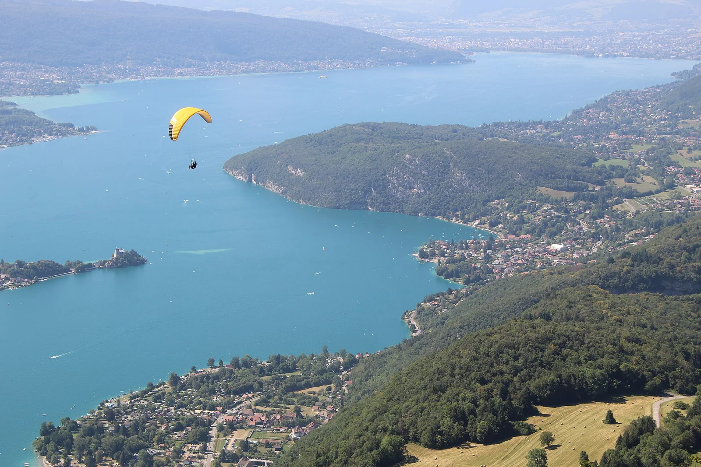

Lac d'Annecy
Haute-Savoie, France · paddle, kayak, baignade

L’un des lacs les plus purs d’Europe, eau émeraude au pied des Alpes : paddle, kayak et baignade en eau calme.
- Lieu
- Haute-Savoie, France
- Niveau
- Débutant
- Activités
- paddle, kayak, baignade
- Type d'eau
- inland
- Coordonnées
- 45.85, 6.17 (position approximative du secteur)
Dangers à connaître
- Trafic de bateaux l’été.
- Brise thermique l’après-midi.
Le conseil d'Ocean Buddy
Pars le matin : l’eau est un miroir parfait pour le paddle.
Ouvrir dans Ocean Buddy Télécharger sur l'App Store
Source : Description historique Ocean Buddy · vérification externe en attente.